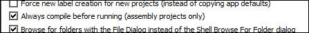

Assembly-specific
App setting: Always compile before running
When this is NOT checked, no code changes will be built before trying to run the game with the Run button.

Macros preserved from Original Disch Disassembly
LDABRA
LDABRA immediate_value, label_nameIf the value is 0, then
LDABRA #0, some_labelis replaced with
LDA #0 BEQ some_label
If the value is non-zero (say $40), then
LDABRA #$40, some_labelis replaced with
LDA #$40 BNE some_label
PAGECHECK
PAGECHECK label_nameIssues a warning if current line (i.e. current instruction) is on a different page than the instruction on or following the specified label.
This macro compares the high bytes of the current instruction and that on or following the label. If they don't match, then a build warning is issued (but no other action is taken).
CRITPAGECHECK
Performs the same check as PAGECHECK, but issues a build error and blocks compilation if the check fails.
It uses the CC65 macro ASSERT, see the CC65 docs for more info.
Example:
WaitScanline (Bank F in the original game) uses this macro to guard againstloops crossing a page boundary, which invariably results in catastrophic memory corruption.
The underlined lines in the snippet below indicate the instructions being checked against the current instruction (following each CRITPAGECHECK macro).
The bolded lines (after #Loop and @Reload) are the instructions against which the current instruction's page address is checked.
WaitScanline:
LDY #16 ; +2 cycles @Loop:
DEY ; +2BNE @Loop ; +3 (5 cycle loop * 16 iterations = 80-1 = 79 cycles for loop)
CRITPAGECHECK @Loop ; ensure above loop does not cross page boundary
LDA tmp+2 ; +3
DEC tmp+2 ; +5
BNE @NoReload ; +3 (if no reload -- 2/3)
; or +2 (if reload -- 1/3)CRITPAGECHECK @NoReload ; ensure jump to NoReload does not require jump across page boundary
@Reload:
LDA #3 ; +2 Both Reload and NoReload use the same
STA tmp+2 ; +3 amount of cycles.. but Reload reloads tmp+2
RTS ; +6 with 3 so that it counts down again@NoReload:
LDA #0 ; +2
Macros introduced in Disch Annotated Disassembly
NILS
NILS count
| NILS instruction | Code produced |
|---|---|
| NILS 1 | .BYTE $EA |
| NILS 5 | .BYTE $EA,$EA,$EA,$EA,$EA |
| NILS 8 | .BYTE $EA,$EA,$EA,$EA,$EA, $EA,$EA,$EA |
| NILS 15 | .BYTE $EA,$EA,$EA,$EA,$EA, $EA,$EA,$EA,$EA,$EA, $EA,$EA,$EA,$EA,$EA |
| NILS 47 | .BYTE $EA,$EA,$EA,$EA,$EA, $EA,$EA,$EA,$EA,$EA, $EA,$EA,$EA,$EA,$EA, $EA,$EA,$EA,$EA,$EA, $EA,$EA,$EA,$EA,$EA .BYTE $EA,$EA,$EA,$EA,$EA, $EA,$EA,$EA,$EA,$EA, $EA,$EA,$EA,$EA,$EA, $EA,$EA,$EA,$EA,$EA, $EA,$EA |
OP
OP opcode, count
.BYTE opcode, opcode, ..., opcode
NILS 8
OP $EA, 8
JUMPTO
JUMPTO address
.WORD address
See INBANK below for more detail.
INBANK
INBANK bank_number
.BYTE bank_number
While this isn't part of the original game, that routine is an experimental extension that FFHEX supports. The purpose of LongCall is to allow cross-bank routine calls without needing a lot of boilerplate/setup code at each call site. The pattern looks like this, assuming that this is called from (say) Bank C:
JSR LongCall JUMPTO SomePriceRelatedRoutineInBankD ; sets carry if some condition met INBANK D ... code after the long call, e.g. BCS @DoThisIfCarryIsSet ...
The JUMPTO and INBANK macros only serve as visual, searchable cues for the LongCall params. Without them, the code would look like this:
JSR LongCall .WORD SomePriceRelatedRoutineInBankD ; sets carry if some condition met .BYTE D ... code after the long call, e.g. BCS @DoThisIfCarryIsSet ...
LongCall is incredibly useful once you understand the principle and the caveats; read more about it in these posts on the RHDN forums:
DLGPARAM macro
FFHEx adds this macro to support assembly hacks in the Sprite Dialogue editor.
The sprite dialogue editor can handle both ROM and Assembly projects. For assembly projects, there's a special case where the editor needs help handling parameters.
Remember that assembly support is currently hacky, and relies on discerning patterns in source code of the routine instead of implementing an embedded assembler. Therefore, the support for assembly is limited to a small set of instructions.
;; An NPC will unconditionally award you some money.
;; [1] The golditem index to award
;; [2] displays the message that prints how much money you received
;; [3] a message of encouragement after awarding the money
Talk_NPCAwardMoney:
JSR CheckMyEventFlag ; checks [0] (this sprite's event flag)
BCS
:+ ; if not tripped
JSR NPCAwardMoney ; sets flag for NPC [0], awards gold in [1], and sets dlg_itemid to [1]
DLGPARAM tmp+1 ; tell the editor that [1] = golditem ID to give ;|:elem0
LDA tmp+2 ; print [2], which should display dlg_itemid using {02} ;|:elem1
RTS
:
LDA tmp+3 ; already gave, print [3] ;|:elem2
RTS
tmp+index
However, notice that without using the DLGPARAM macro, the first param isn't referenced. That is, tmp+1 is not used anywhere within this routine; it's referenced in the body of the NPCAwardMoney routine. Since this routine has no reference to tmp+1, the editor would not know to allow the first param to be modified or how to modify its contents.